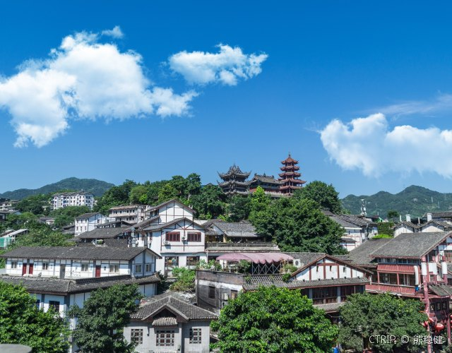
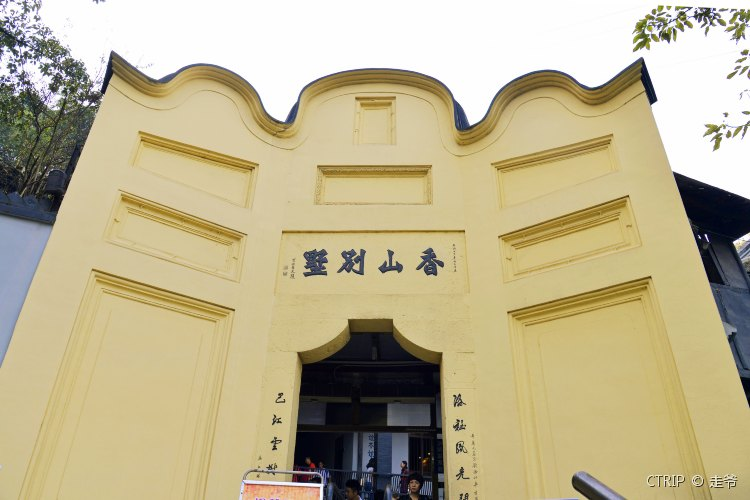

重庆别名山城，整个城市层层叠叠地建设在山地上，很多楼房的上中下层都通着街道和公路，闹市区里逛街也要上坡下坡，常使人有种迷幻的感觉。
重庆市区的朝天门是嘉陵江和长江的汇流处，造就了历史上著名的码头文化，留下了磁器口、洪崖洞等特色的老街。
抗日战争时期，重庆作为中国的陪都，成为国家政治和文化的临时中心；解放时期，这里又经历了《红岩》原型故事，留下了很多红色景点。
重庆美女闻名全国，来重庆“打望”美女，也就成了很多游客的必选项。看美女的最佳地点之一，就是繁华的解放碑商圈。
重庆的美食以辛辣为主，这里的火锅全国闻名，大快朵颐的同时，还可以买些地道的火锅底料带给亲友。
另外，重庆的小面、辣子鸡、酸菜鱼和众多经典的川渝菜都能让人大快朵颐。
重庆主城区以外的区县，有优美的自然风光可以欣赏：长江三峡、武隆的神奇自然地貌、仙女山的高山草原、酉阳的森林桃源等。